Ranking
This page will be ranking the characters from weakest to strongest, and explaining why they are in their place. I will be ranking the void creatures and humans separately, but Candy/the Stalker will be in both lists.
Void Creatures
8: The Stalker (form 1 & 2)
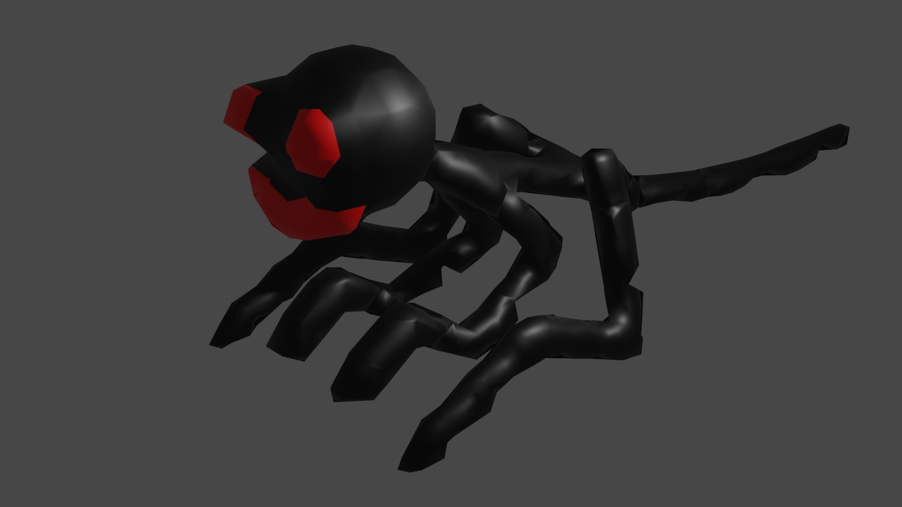The Stalker is basically harmless in his first two forms. He's the smallest out of all the void creatures, and hasn't developed enough strength to fight yet.
7: Leghead
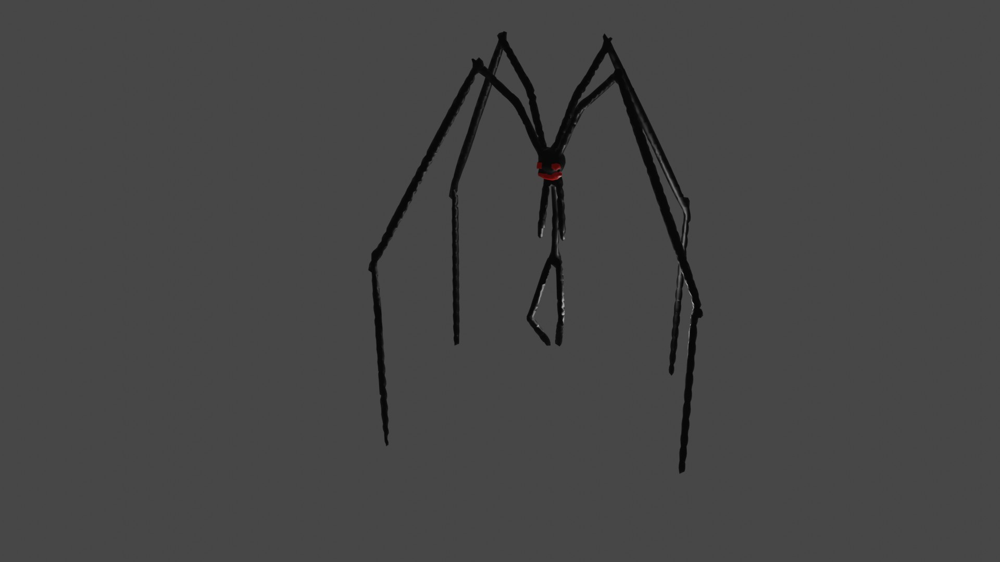Leghead attacks with it's long legs, but it's weakest point is it's main body. They have no way to quickly block attacks without tripping.
6: The Ripper
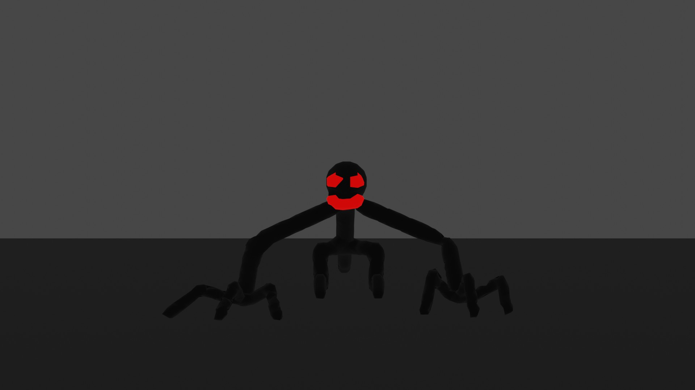The Rippers are very powerful in groups. But alone, they can still fight very well.
5: The Stalker (final form)
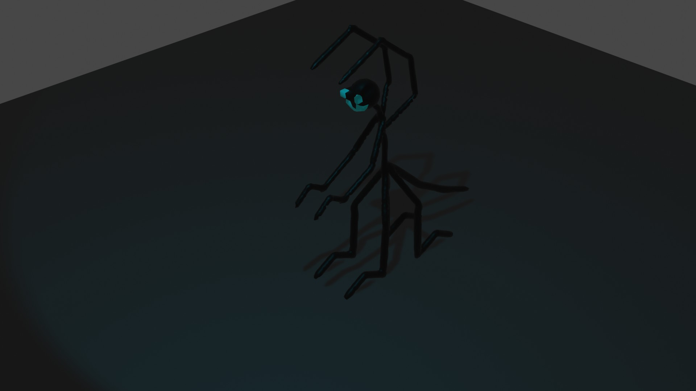In his final form, he gains the abilities of Blue Fred, and a little but of Michael's power. This allows him to shoot lasers and teleport.
4: Fred & Blue Fred
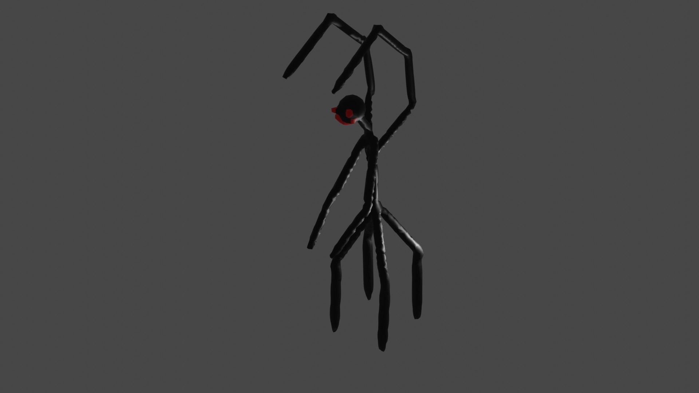Freds make up most of the void creatures. They are also have quicker reflexes than most of the void creatures. Blue Fred is more powerful than a regular Fred.
3: Hydra
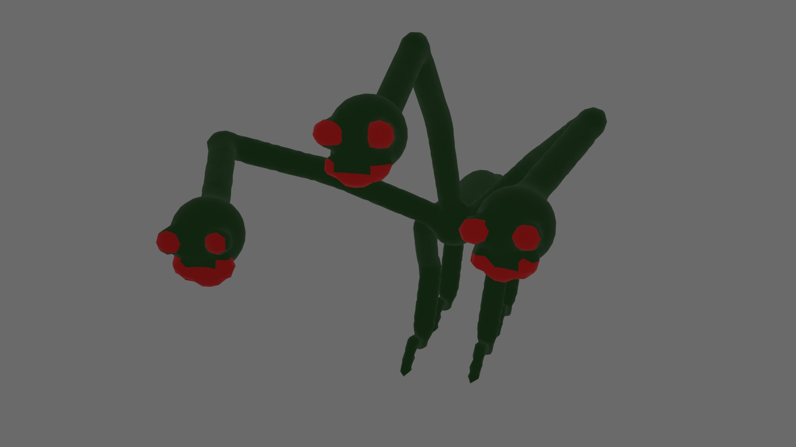Hydras are the largest void creatures. Since they have three heads, it's harder to sneak up of them. They can also camouflage, which makes them harder to find.
2: Spike
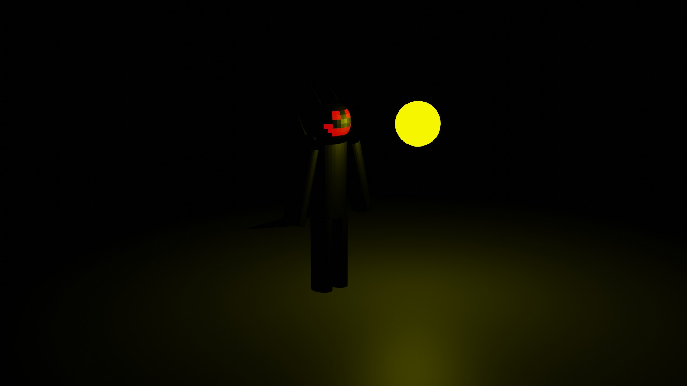Spike is the fastest void creature. At his top speed, it's like everything else is frozen but him.
1: Mega Fred
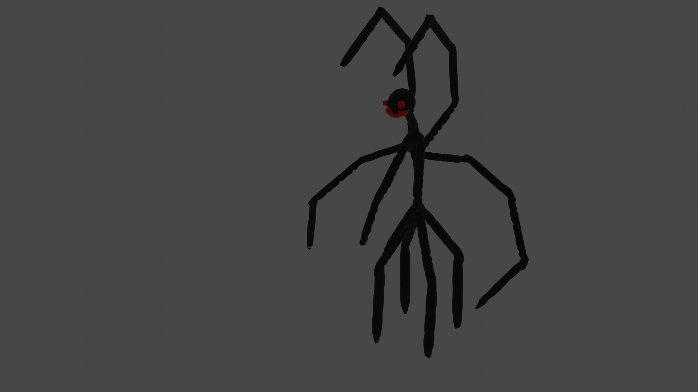Mega Fred is a Fred with Crim's powers plus some. This makes it able to command and make void creatures, and makes them stronger than Crim.
Humans
Before I rank them, let me tell you about overcharges. Overcharges are when a person uses more than 100% of their power. This makes them stronger and might change their look. For this list I will talk about their strongest ability and where they would be in their overcharged form.
5: Cannon
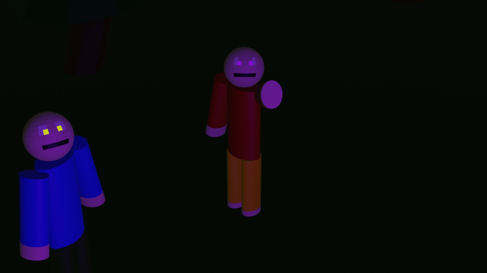Even though he is ranked the lowest, that doesn't mean he's weak. His telekinetic abilities never miss, but the target needs to be close enough for him to use it. The target also might be able to react before he can use it. In his overcharges form, he would match the power of Michael.
4: The Guy
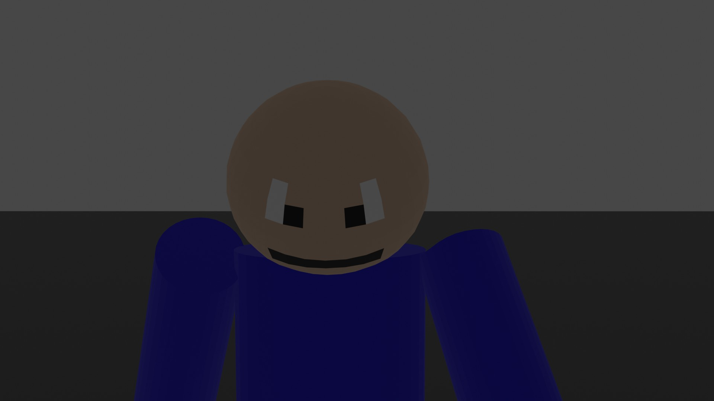The Guy's fast speed allows him to dodge and attack before the target can react. He can also put energy into his hands to make his punches harder. In his overcharged form, he has horns, a tail, and claws. He is also way faster in this form. His overcharge form in stronger than all the heros in their normal form.
3: Michael
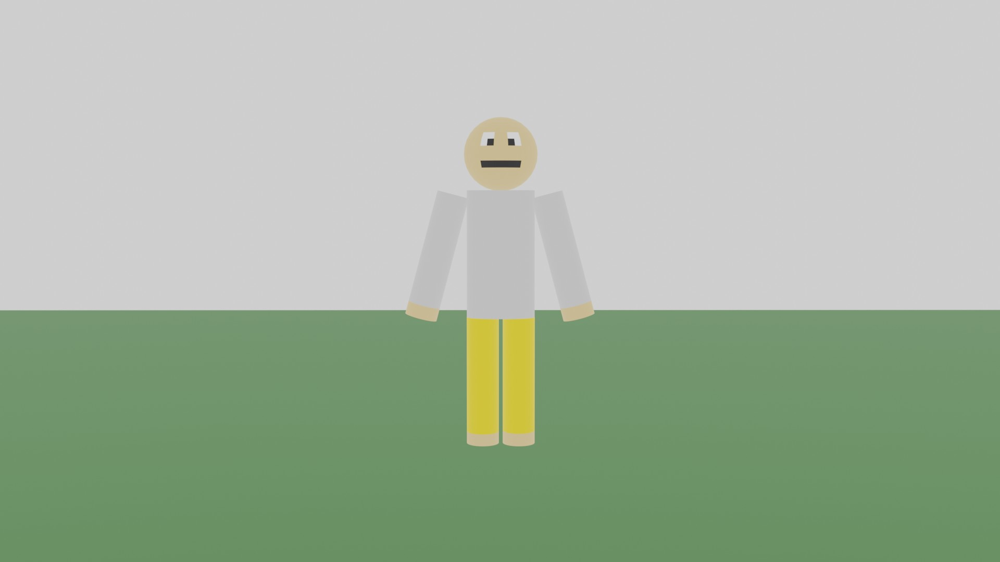Michael represents light. He is also fast and has a lot of strength. His overcharge form wasn't in the animation series, but he does have one. His overcharge form makes him very bright, looking at him is like staring at the sun. It also makes him stronger and he is able to heal others.
2: Crim
Crim is stronger than his twin brother, even though they have the same powers. This is because Crim uses his void creation more, while Michael only used it once. Crim's overcharged form is the most destructive. His overcharge allows him to heal very quickly, and steal people's lifeforce.
1: Candy/the Stalker

Candy is at the top of the list because of his ability. He can shapeshift into anything he has seen. For example he can transform into Crim's overcharge form if he wanted to. Unlike the others, Candy's overcharge is always active. His overcharge can gain the strength of anything he has seen, and he doesn't need to transform into it to be as strong as it. He can't gain the abilities (lasers, teleporting, flight), but he can gain The Guy's fast reflexes. But he never used it unless he needed to.